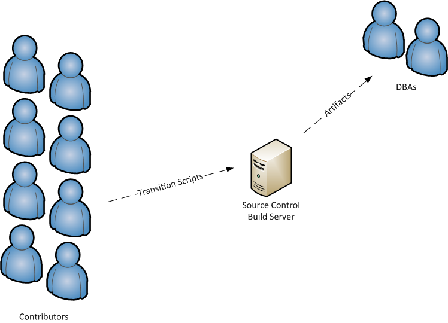

DfaSys2 Database
SCM Inception
The Plan
- Review Concepts
- Discuss
- Identify Issues / Players
Goal
- Review the Process
- Identify issues / Reservations with Moving Forward
- Identify People who will ned to be training in the process.
Motivation
80% of the Dimensional's business critical code is in the database.
NOT UNDER SOURCE CONTROL
The Problem
Centralized Development

Anti-Pattern
High Fear of Change
Automated Testing it NOT a Option
The Proposed Solution
Development Sandboxes

Best Practice
Work Flow
Benefits
Forces all Object Changes Thorough Source Control
Encourages all Enviornments to be in Sync
Dev / Stage / Prod